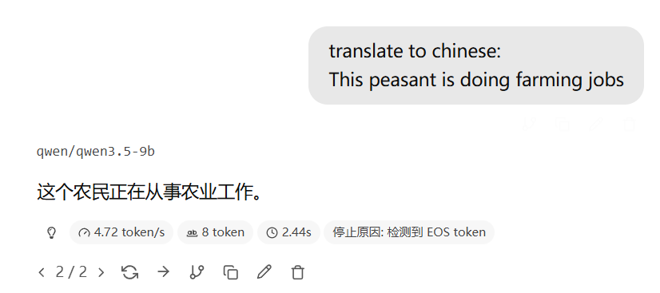
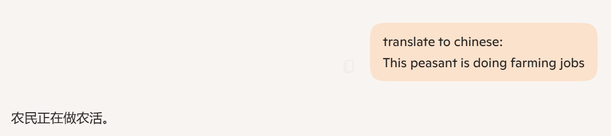

Adjust the Matrix to make the Output close to the expected result (Outputexpected).
调整 矩阵 使得 输出 接近 输出期望。
In the AI model, we have multiple inputs and outputs, which can be represented as a matrix multiplication
It is just the extension of dimension, from single variable to multi-variable.
在AI中，多个输入和输出，即可表示为矩阵乘法
仅仅是维度多了，单变量成了多变量。
| y₁ |
| y₂ |
| ⋮ |
| yₙ |
| a₁₁ | a₁₂ | ⋯ | a₁ₙ |
| a₂₁ | a₂₂ | ⋯ | a₂ₙ |
| ⋮ | ⋮ | ⋯ | ⋮ |
| aₘ₁ | aₘ₂ | ⋯ | aₘₙ |
| x₁ |
| x₂ |
| ⋮ |
| xₙ |
| y1 | = | a11×x1 | + | a12×x2 | + ⋯ + | a1n×xn |
| y2 | = | a21×x1 | + | a22×x2 | + ⋯ + | a2n×xn |
| ⋮ | ||||||
| ym | = | am1×x1 | + | am2×x2 | + ⋯ + | amn×xn |
| y1 | = | a11 × x1 |
| y2 | = | a21 × x1 |
| ⋮ | ||
| ym | = | am1 × x1 |
The AI model is a kind of function, which is a mapping from the input space to the output space.
If we combine the Input and the Output together, we can get a set of data points (x, y). (Call it as the "Data")
AI可被看作是个映射输入和输出的函数
将输入和输出看作一个整体，我们就得到了一个数据点集合 (x, y)，暂时管他叫"数据集"。
Since AI is doing classification and prediction, we are seeking the problem of classification and prediction.
Not tested in this project, but might be a direction
Possible problem:
Classification has recursive problem. There are categories under categories.
没测试过，也没有思考过 但可能是个方向
可能的问题：
What kind of problem related to deeper classification in the translation task?
思考：翻译中什么情况涉及多次分类，细分小类？
Answer: The distinguish of synonym (Words have similar meanings) and polysemy (Words have multiple meanings) in the translation task.
答案： 在翻译中分辨近义词与多义词
Here, we only test the synonym problem. The synonyms are always not have the exact same meaning, a lot of them contains extra emotional or cultural, or even context information/omission. While this difference will be enlarged in the translation.
此处，我们仅针对近义词问题。诸多“同义词”其意思并不完全等同。 这些细微差异往往包含额外的情感、文化，甚至是上下文信息/省略。 而此差异会在翻译中被放大。
This might be quite important in the task of professional translation. (Culture and context background will influence reader in the understanding and the choice of words in responses.)
这在专业翻译中或许非常重要（文化和上下文背景会影响读者的理解和反馈用词）
When we have multiple levels of classification, humans can easily classify the data into a more precise category (Even we do not speak out the detail, but we know that; and this will influence our judgement and choice of future conversation and actions).
人能非常轻松地将事物更细致的分类（这会影响判断，但有时不会直接说出）
Here, we try the most typical random example thought out from us; all of the following words has the similar meaning of "Important", but they have different contexts.
如下随机例子包含中文皆为“重要”的词汇，但含有细微语境差别。
Note: The true definition and meaning are here are according to the Cambridge Dictionary, and from the Etymology (Word origin) aspect, the concepts are extended from different original meaning.
注： 此处词汇含义参考剑桥词典及词源学（词义流变）。即如何从原始含义引申出当前概念。
Note: the Chinese has one general word "重要" to cover all of the above words. But it does not give out "How/Why" important it is. ( This simple translation is common in the internet, but might not be appropriate in a professional translation scenario. )
注：上述英文词汇在中文中皆为“重要”，但通常并不表达出“重要的程度/方式/原因”。（这种翻译简化在网络常见，但私认为在专业翻译中并不合适）
In the translate task, the AI just translate everything into "重要". The output does not have any decoration or comment with bracket.
在翻译任务中，AI把所有词都翻译成了“重要”，且无词汇修饰或者括号注释。
Example (with image):
The word "peasant" has raised meaning. But the AI just translate it into "农民", which is a neutral word for "field/
farmland worker" especially for jobs caring and growing plants, crops and vegetables.
例子（附图）：
"peasant"有歧视义，但AI把它译成了“农民”。在中文中，这是个中性词，指的是照料和种植植物、农作物和蔬菜的工作。


Imagine we have a tree start from the root, if we classified the data into the first layer but not the second layer;
It doesn't means we do not know the existence of the sub-categories and the relationship. We just stop at the first layer and do not classify further. This is the problem of recursive depth in classification.
Note: Human will classify the things by small details unconsciously/subliminally. But AI are doing it rigidly like a real machine. It only does what you instructed.
想象一棵树，从根开始，如果我们只将数据粗分到第一层；你无法判断我们是否知道有第二层，也不能说我们不知道第一层节点和第二层节点之间的关系。即唯一可能为看到了第一层就停止了思考。此为分类深度的问题。
注：人会在潜意识里通过事物细节分类，但AI非常死板，你说一它就是一，它只会做你设定好的事情。
A Possible Simple solution:
If we do not know the relationship of the layer 1 and layer 2, list out the possible sub-categories in the input and point out there will be relationship between them; this will help the AI to recall the possible sub-categories and do a deeper classification.
Note: Both 2 things need to be done:
Activate/Let Recall + Instruction/Ask for detail jobs (both are necessary)
Because AI is a classifier (comparer) and predictor, it will do all detail comparison between possible sub-categories and get the difference. (Classification)
Although because the current model is mostly based on addition, the ability to enlarge the difference might be a little bit weak compare to the expected, it is enough to show the difference.
一个简单的可能方案：
如果我们不知道第一层和第二层的关系，那么列出输入中可能的子类别，并指出它们之间会有关系。这将帮助AI回忆起可能的子类别并进行更细致的分类。
注：两件事都需要做：
激活回忆 + 指示任务 （缺一不可）
因为AI是个分类器（比较器）和预测器，所以列出所有的子类别能激活AI的分类比较能力，让子类的细节（关系）被比较出来
虽然由于现在的模型以加法算法为主，放大差异的能力可能比预计略差，但足够展示差异
This project find that the way assigned above is a solution of this kind of problem, and roughly test it in the translation task.
The result is good, the method works.
The AI will point out (vital is in life way important in the brackets) the key difference and the extended meaning of the word as expected.
with_instruction_with_recall > with_instruction_without_recall (Information increase, but says rubbish when read by human; the AI generates a lot of random examples which increase the number of unique vocabulary, but fails to highlight subtle differences) > without_instruction_with_recall > without_instruction_without_recall
∴ The correctness of the methodology is also verified by practice.
Note: You cannot use AI to judge the quality of the response; it is AI becomes both the judge and the player. And some things cannot be quantified as said it is a kind of "Academic", but only judged by human.
该项目发现上述方法能有效解决问题。我们在翻译任务中粗略的测试了这个方法，结果很好，方法有效。
∴ 经过实践，方法论应该也没大问题
AI会指出（如：vital为生死攸关）词汇的关键差别和扩展含义，符合预期。
with_instruction_with_recall > with_instruction_without_recall (信息增加，但人读起来感觉乱七八糟， 人判定没有给出想要的额外的信息， 实际情况是AI自己举了一堆随机的杂七杂八的例子增加了词汇量， 但是就是点不出来微妙的差异) > without_instruction_with_recall > without_instruction_without_recall
注：绝对不可以图省事或者所谓严谨“学术”用AI来判断回答的质量和信息量，因为这样AI既当了裁判又当了运动员。 而且有的东西无法量化，只能靠人判断。
The test method is to measure whether there is extra information generated.
If there is any information from the second layer, compare to the response only with the first layer information, the amount of information grows.
Also, the response will be longer compared to the response without the second layer information.
∵ AI generated is unstable
∴ Use unique word number as a measurement of the amount of information.
∵ Each response has different length
∴ Multi-Dimensional judgement is needed
∴ Unique word count + Response Length + Unique word count per length (Density of information) are all used as measurement.
测试方法是测量是否有额外信息被生成。 如果有第二层的信息，那么与只有第一层信息的回答相比，信息量会增加，且回答的长度也会更长。
∵ AI生成的内容不稳定
∴ 使用独特词汇数量作为信息量的衡量标准。
∵ 每个回答的长度不同
∴ 要综合判断
∴ 独特词汇数量 + 回答长度 + 每长度的独特词汇数量（信息密度）都会被纳入参考。
The file structure is as follows:
文件结构如下：
Optional Appreciation / 可有可无的致谢
(Just for filling the format and blank space) (单纯凑数用的)
Thanks to the teacher and the teaching assistant for their guidance and support throughout the project. Also, thanks to the classmates for their valuable feedback and suggestions. As the famous philosopher said: "human nature is not abstract or fixed, but defined by active relationships within society, production, and history."; to my parents, friends and everyone helped me in my life and study, for their support and encouragement. Thanks also to those who keen on practice engineering science instead of "over-precised 'beautiful' data", "terminology" and "rigorous", which give me the confidence of using the "Seek truth from facts", "Solving problem is the things we need to do" methodology, instead of innovations with no bases, and treating innovation and language decoration skills as KPI.
感谢老师和助教在整个项目中的指导和支持。 也感谢同学们的宝贵反馈和建议。 正如著名某哲学家说过：“人是一切社会关系的总和”； 我非常感谢我的父母、朋友和所有在我的生活和学习中帮助过我的人，感谢他们的支持和鼓励，帮我调整身体以及精神状态。 还要感谢那些热衷于实践工程科学而不是“过于精确的‘漂亮’数据”、“术语”和“严谨”的人，他们给了我使用“实事求是”、“解决问题才是我们需要做的事”的方法论的信心，而不是在一味的追求创新，把创新和文字功夫当成KPI。